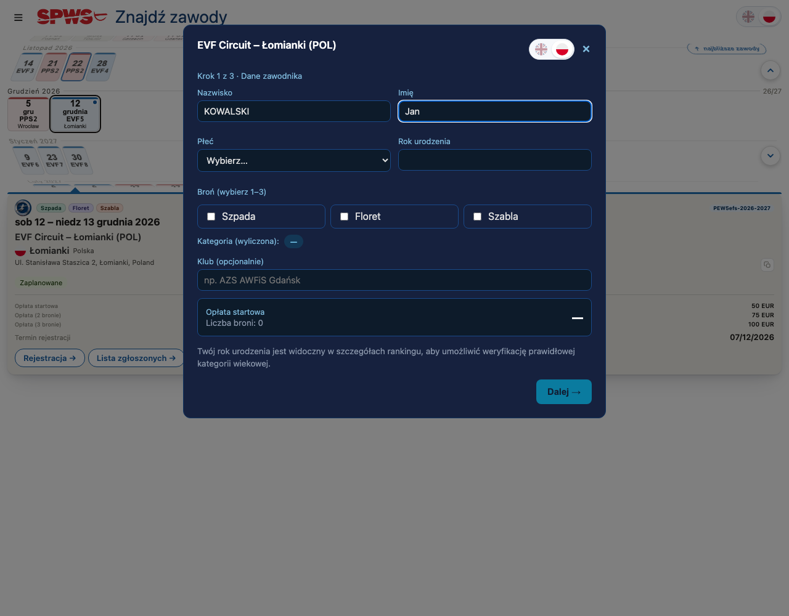
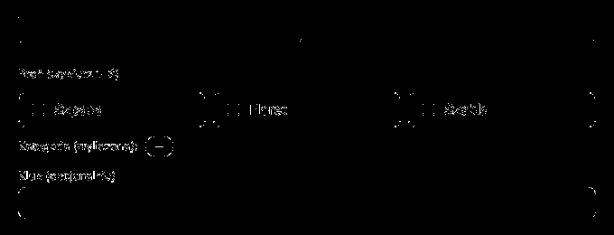
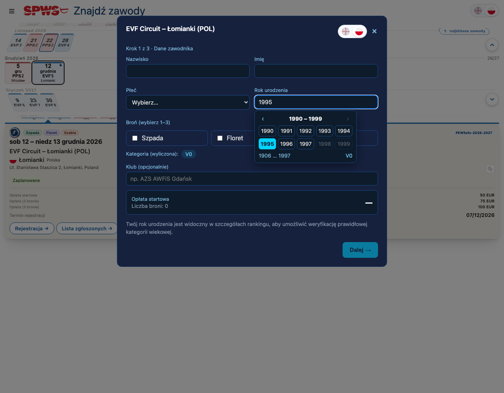
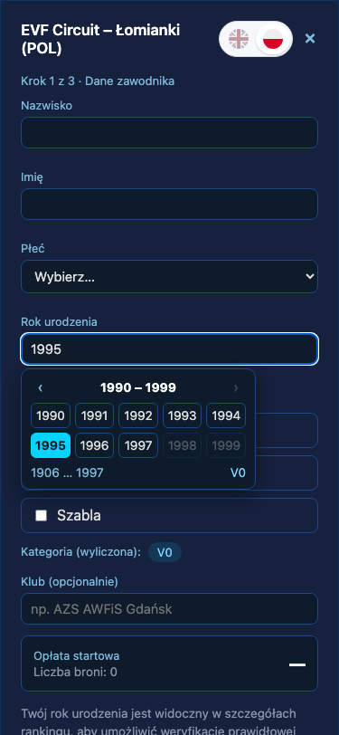

Registration form · Birth year · Release 2 of 4 · Pixel sheet
Captured on the WordPress calendar page body (doc/wordpress/znajdz-zawody.html) with the bundle built from main and from this branch, LOCAL standing in for PROD. The form is unchanged until the year box is touched; the new states are below for your approval, with the ADR-079 amendment draft. Nothing is pushed.
01 · Nothing else changed
registration-birth-year-release-2-sheet/*/form-report.json).

02 · The new states
1 · the box focused: the grid opens on the decade of a 50-year-old (1970 – 1979)
2 · „47” typed and the box left: „Rok spoza zakresu 1906–1997”, and „Dalej” stays off
3 · 1995 in the box: the grid opens on its decade (1990 – 1999), 1998 and 1999 greyed out, category V0


02b · It moves with the season and the year
The youngest year is the event's season's later year minus 30, read from the season; the oldest is today's year minus 120, read from the clock. The form and the database compute both every time. Tests now pin it five years on, both halves:
| Season, opened on | Range | Grid opens on | V0 edge | First refused |
|---|---|---|---|---|
| 2026/27, 21 Nov 2026 | 1906 … 1997 | 1970 – 1979 | 1997 | 1998 |
| 2031/32, 21 Nov 2031 | 1911 … 2002 | 1980 – 1989 | 2002 | 2003 |
fn_registration_birth_year_bounds(2032, 2031-11-21) returns 1911 and 2002; the table rule passes it today's date, checked against current_date; a real 2031/32 event accepts 2002 and refuses 2003.03 · LOCAL walk-through
23514 REG_BIRTH_YEAR_OUT_OF_RANGE: 47 outside 1906–1997; the new form shows that refusal as its range line (RFYEAR.06).04 · Measured on PROD and CERT, read-only
05 · For your sign-off
ADR-079 · Amendment (2026-11-21, release 2) — a declared birth year lies inside its season's range
Context. On 21 Nov 2026 PROD held two impossible declared years, 47 (the entrant typed her age) and −1972 (a minus sign the number box accepted), both shown as V4; they were corrected by hand the same day. The box accepted any integer, and nothing below the form refused one.
Decision. (1) A declared birth year lies between this year minus 120 and the event's season's later year minus 30, the V0 rule itself: 1906–1997 for 2026/27. (2) The form offers only those years: focusing or clicking the box opens a decade grid on the decade of the year in the box, else of a 50-year-old; it pages by decade as far as the range reaches, greys out years outside it, shows the range and the chosen year's category, and keeps focus in the box while pressed. Typing still works, digits only, four at most, and closes the grid; a year outside the range shows a line under the box naming the range, and „Dalej” stays off. (3) Both edges are computed on every use, never stored or fixed: the form from the season and the clock, the table from fn_registration_birth_year_bounds(season end year, today); 2031/32 in 2031 gives 1911–2002. (4) The table refuses any other year on every write path, the visitor's create and edit, an administrator's direct update and the PROD → CERT copy (trg_registration_birth_year_range, migration 20261121000003), naming the range in its refusal, which the form shows as the same line.
Consequences. An impossible year can no longer reach the entry list or the organizer's files. Stored rows are not re-judged; on release none is outside the range. Two older tests change their fixtures: 75.15 declares 1910 instead of 1902, and 76.9 writes its below-V0 row with the rule switched off, because the export must still leave such a stored row out. Tests: Vitest RFYEAR.01–06 (birthYearRange.test.ts, RegistrationForm.test.ts), pgTAP RFYEAR.07–10 (131_registration_birth_year.sql), each range pinned for 2026/27 and five years on. FR-168.
06 · Found on the way
pixel sheet · FR-168 release 2 · 21 Nov 2026 · tools: registration-birth-year-release-2-sheet/tools/proof.cjs (form · walk), diff.py, build_sheet.py